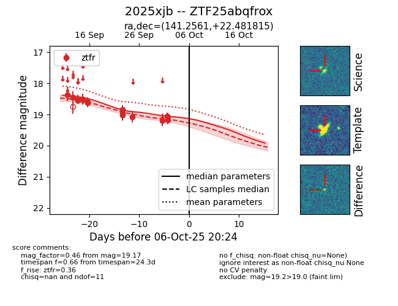
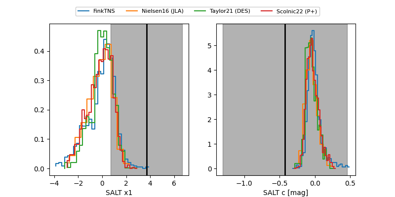

FINK: ZTF25abqfrox
Lasair: ZTF25abqfrox
ALeRCE: ZTF25abqfrox
TNS: 2025xjb
YSE: 2025xjb
ZTF25abqfrox (ztf,fink)
2025xjb (tns,yse)
equatorial (ra, dec) = (141.2561,+22.48181)
galactic (l, b) = (206.7347,+43.24556)


last ztfr=19.17
15 ztfr detections